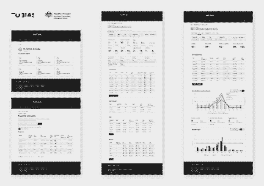
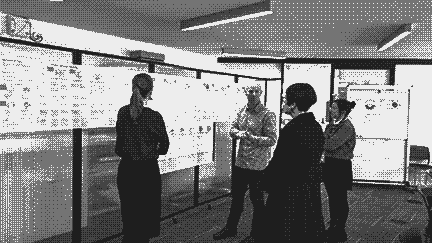
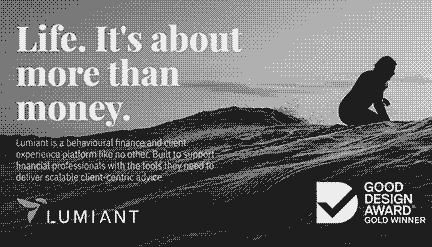
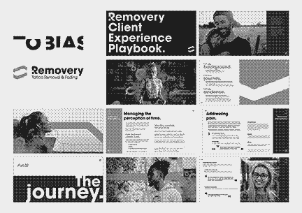

(He/Him). Dharug Country. Sydney, NSW, Australia.
Designer with multi award winning expertise in human-centred design (HCD), user experience (UX), user interface (UI), interaction, product, visual design and storytelling across engagements in federal government, state government, corporate, health, technology, education and private equity ventures. Operates the full breadth of the design process from discovery with user research, analysis and synthesis, to prototyping, usability testing and design systems into development and delivery of end to end products, services and deliverables that drive value, change and engagement.

Securing Australian Export Growth Through Intelligent Regulation →
Department of Agriculture, Fisheries and Forestry
Interaction Designer / Sep 2021 - Jun 2025

Simplifying the Cross-Border Trade Experience for Businesses to Strengthen the Australian Economy →
Simplified Trade System Implementation Taskforce (Austrade)
Experience Designer / Sep 2021 - Mar 2022

Design, Build & Launch a Brand New Fintech Venture Within a Year →
Lumiant
Experience Designer / 2019 - 2021

A Human-Centred Approach to Owning the US$5 Billion Tattoo Removal Market →
Removery
Experience Designer / 2019 - 2021
Senior Experience Designer / Jan 2019 - Aug 2026
Led and supported interaction design and experience design streams across 8 years of consultancy projects and client engagements, including 5 Good Design Awards. Working in both client side augmented teams and delivering client projects with our internal agency team.
Department of Agriculture, Fisheries and ForestryInteraction Designer (Subcontract w/ Tobias) / Sep 2021 - Jun 2025
Take Farmers to Markets program, Compliance Oversight and Export Service Onboarding, focusing on digital transformation of export clearance systems into the Export Service.
Simplified Trade System Implementation TaskforceExperience Designer (Subcontract w/ Tobias) / Sep 2021 - Mar 2022
Whole-of-government strategic transformation, Austrade.
Digital Transformation AgencyExperience Designer (Subcontract w/ Tobias) / Apr 2021 - Jul 2021
Future of Disaster Recovery and Resilience project, GovX.
Bachelor of Visual Communication (Digital Design)JMC Academy / Jun 2016 - Nov 2018